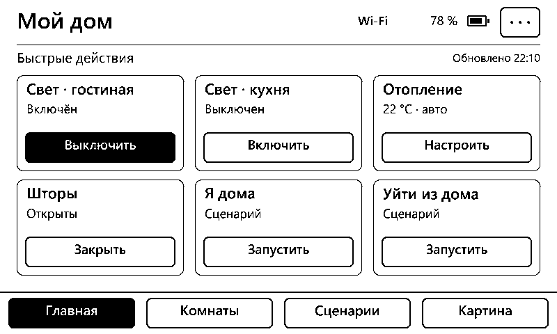

A · Быстрые действия
Предлагается для MVP. Частые устройства и сценарии доступны с первого экрана; комнаты — отдельный раздел.
Названия, время, заряд и состояния демонстрационные. Это рендеры, а не подключённый интерфейс устройства. Первое касание, тайм-аут 45 с, регуляторы и формат картин — предложения к согласованию.